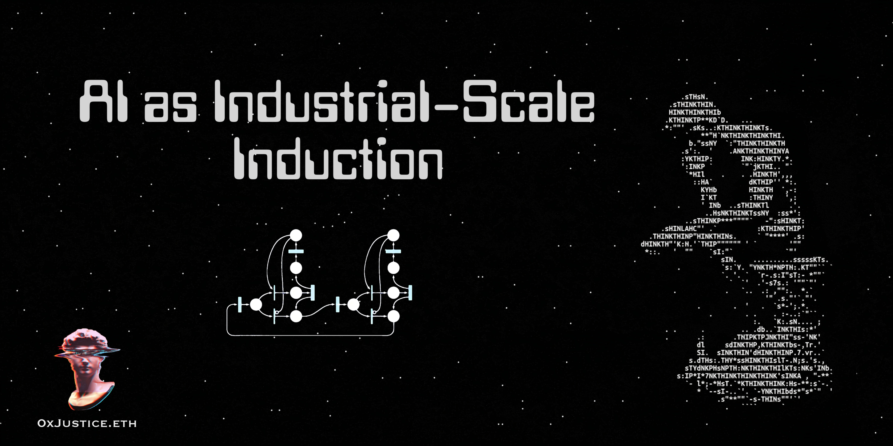
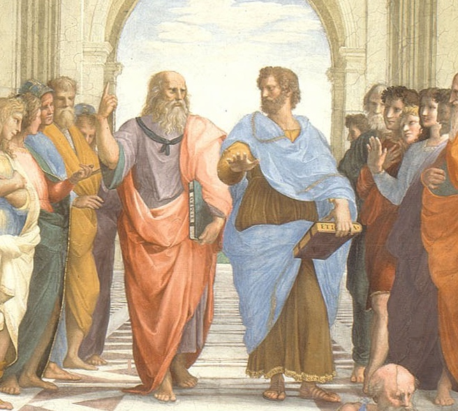

AI as Industrial-Scale Induction
Originally published at https://paragraph.com/@0xjustice/ai-as-industrial-scale-induction

Plato has reigned over cyberspace for the last 80 years. We've built the entire computational edifice of the modern world on deduction: formal systems, precise syntax, and formal logic. The realm of inductive reasoning has had almost no impact by comparison. Moore's law had no window into the inductive side of the scientific method until now.
Large Language Models (LLMs) mark the arrival of industrial-scale digital induction. By predicting the next token, they recreate shockingly accurate models of the world. AI is the purest form of digital induction. This perspective makes AI not only the next stage of computation, but also the next stage of epistemology.
Programming is to deduction what LLMs are to induction. That is the central thesis of this essay. Formal languages enable us to express perfect logic; generative models harvest and expand our understanding of our world model. Together, they comprise a new digital scientific method.
The Scientific Method
The big story of AI isn't just "intelligence". Scholars are still debating what intelligence is and if "next token prediction" qualifies. However, let's consider it from another perspective. Philosophers have been discussing whether the universe is ultimately understandable through abstract concepts (a priori) or through empirical observations (a posteriori) since time immemorial.
The Great Divide
This debate impacted endless fundamental subjects. People questioned to what degree humans are born with innate concepts, while others tried to show how such ideas get inferred from experience. Titans such as Immanuel Kant broke the mold with his famous transcendental argument, showing that certain concepts can't even be argued against without assuming their truth.
Others sought to build an entire worldview based on deductive reasoning, starting with Descartes' famous "I think, therefore I am" and culminating in the foundations challenge that aimed to unify all of logic and mathematics within a single, self-contained deductive model. This effort failed when Kurt Gödel showed its impossibility with his Incompleteness Theorem. But no greater image reflects the depth of this debate than Raphael's School of Athens painting.

https://en.wikipedia.org/wiki/The_School_of_Athens
In this masterpiece, Plato points upward to the abstract realm of perfect forms and eternal truths (deduction) while Aristotle gestures downward with spread fingers, emphasizing our need to understand the diverse world of individual things through observation and experience, ie, the realm of induction.
Digital Deduction
Deduction is made executable in programming. Gödel, Church, and Turing provided the formal foundation for computational logic. Programming operates by constructing logical systems and exact rules that govern machine behavior. It is challenging to get right, but once mastered, it becomes highly reliable and repeatable. Guarantees are encoded in syntax, logic, and type systems, and behavior is traceable and reproducible if correctly specified.
Digital Induction
LLMs formalize induction. They operate by generalizing from massive data patterns rather than fixed rules. They are cheap and fast to begin with. They are approximate and heuristic-based, lack guarantees, but compensate with remarkable flexibility. Machine learning simulates plausibility instead of proving truth, capturing the intuition of experience in statistical form.
Together, these two poles—formal language and generative language—constitute a comprehensive epistemological toolkit. The scientific method has been digitized end-to-end: observation (induction) and theory (deduction) are now both programmable.
Tradeoffs and Sequencing
Induction and deduction are not rivals; they are phases of a single loop of reasoning. We induce patterns, then deduce systems. We experiment, then formalize.
Rapid Development
Induction is cheaper and easier to begin with. You observe your surroundings and notice what's happening, and expect similar types of things to keep happening. LLMs put this on steroids. You can recreate a Doom simile with little effort. It's cheap and easy to start, but if you wander too far down a path and try to trace your steps in the reverse order exactly, there's no guarantee the world you knew still exists. See: LLM Doom Game Recreation
Hardened Software
Programming, on the other hand, guarantees predictability, but it's expensive and challenging to get right. Formal methods help here, but may be NP hard. See: TLA+, Coq, and formal verification.
Code Copilots
The golden path is to use the easier tool (induction) to help formulate theories and deterministic models (deductions) for how things work. When viewed in this light, an entirely new perspective emerges regarding the role and relationship between these sciences and why utilizing LLMs for coding is so beneficial. This is why AI code copilots are blowing up.
Copilots embody the induction-to-deduction loop: they generate patterns (induction) that humans refine into formal correctness (deduction). Then, the verified outputs retrain the next generation of models, closing the circuit.
Digital Science Reborn
The scientific method has now been fully digitized, allowing both to occur at machine speed. Programming made deduction executable. LLMs make induction executable. Together, they form the first self-contained epistemology of computation. Science, once limited by the human mind's processing power, now scales with Moore's Law.
Keen thinkers are already recognizing the limitations of pure text-based inference, noting that it's being "exhausted as a training source" and that the next frontier lies in applying models for net-new discovery through robotic labs and real-world experiments. I’m suggesting the same, but applied to the realm of optimization proofs, which is both easier and more natural in the LLM context. See: This Robotics Startup Just Emerged From Stealth With $300 Million to Create an 'AI Scientist'
End Game
Our software systems didn't start to smell with the emergence of "vibe coding". Major well-known systems are so complex that new features are added through experimentation, with test suites serving as guardrails. The complexity had reached such a level that any attempt actually to understand it becomes lost. We're still banging rocks and sticks together, hoping that the whole thing doesn't collapse.
Formal methods have been inaccessible to regular devs and remained the focus of theoreticians and researchers. The mental load of functional or formally typed systems exceeded what most teams can justify under time pressure. So formal languages stagnated in academia or small niches (proof assistants, smart-contract safety, theorem provers). AI can reverse decades of market selection that favored simplicity over correctness. Over time, this shifts "testing culture" toward a mathematical verification culture, where AI closes the rigor gap.
Software is becoming a function of compute. You can now give a PRD to several models and each will work tirelessly until a functioning product is produced. Critics are quick to highlight the fragility of such systems, but that misses the point. By prioritizing and sequencing methods, we can brute force discovery and development of formally verified software systems and do so in a way that's accessible to non-academics. This is the new bootloader of the digital age.
The million monkeys with a million typewriters have become a million savants with compilers. The task now is to aim them toward mathematically provable digital laws that hold under all transformations. We've had programmable logic for a century. We've had digital induction for three years. This is the coherence that takes us to the stars.
https://www.maximumtruth.org/p/deep-dive-ai-progress-continues-as
Originally published on 0xJustice.eth